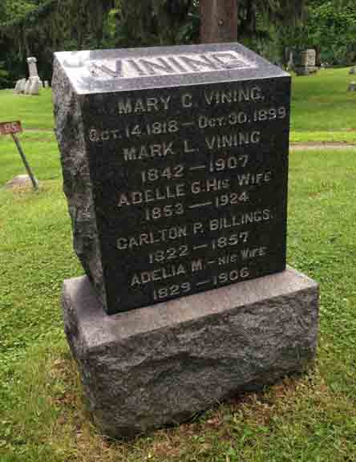
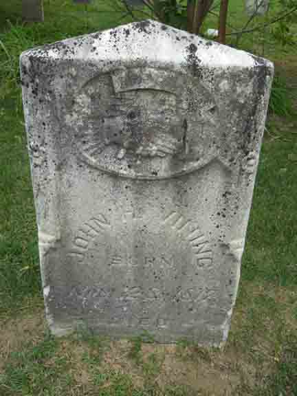

Documentation for John Hamilton Vining - (1) Mary Cordelia Canovan; (2) Rachel Ginter Thompson
Death Data
Headstone for family of John Hamilton Vining, in Highland Cemetery, Ypsilanti, Washtenaw County, Michigan (from Find A Grave):

Gravestone for John Hamilton Vining, in Soop-Pleasantview Cemetery, Van Buren Township, Wayne County, Michigan (from Find A Grave):
